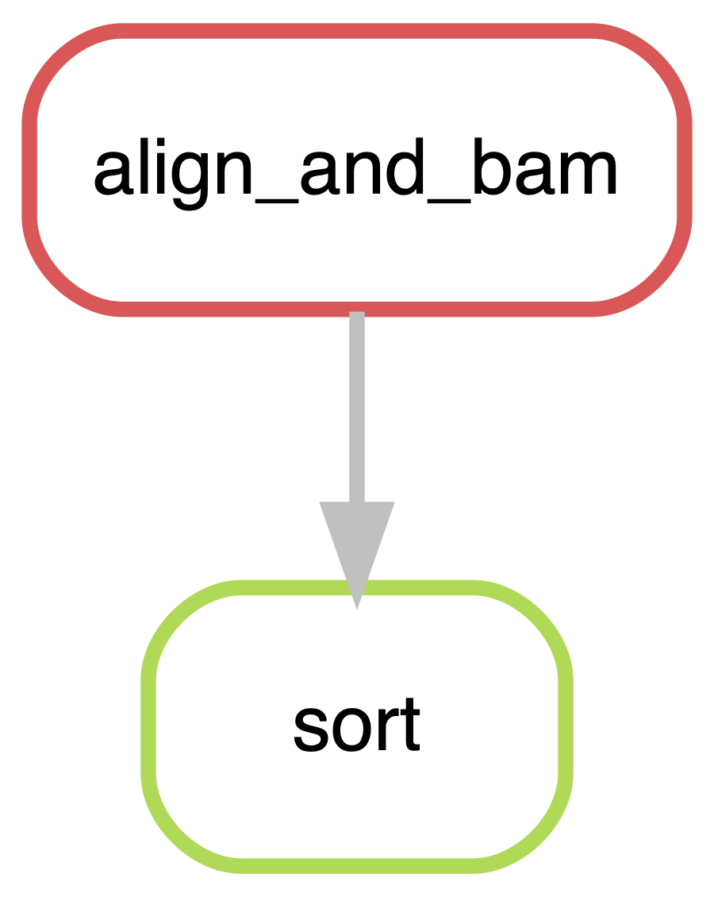
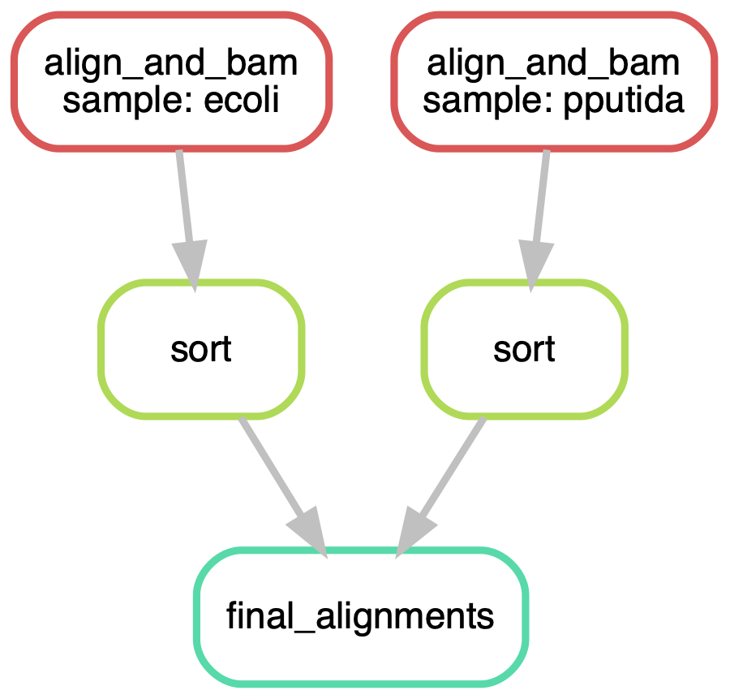

container: config["singularity_image"]1 First Look
In this section we’ll look at making and running a first pipeline and understanding why snakemake is better for you than bash scripts.
The guidance given here is for using snakemake version 9.3 and an update from the previous tutorial. Many of the recommendations are not only required but will also provide a robust and reproducible workflow.
1.1 singularity
On a cluster like the one TSL uses each job in the snakemake pipeline runs on a machine with its own execution environment, that is its own memory, CPUs and loaded software. This means that things like source and singularity images have to be loaded in each job and not globally.
snakemake introduced the ability to run required tools from containers e.g. Docker, Singularity. To enable this function we add the attribute container to the snakefile (which we will explain further below).
Where the container location has been defined in the config.yaml (discussed next).
For each snakemake workflow that is built, there should be a specific singularity container for the required software/tools to carry out the analysis the snakefile defines. To build a container you require a definition file. Often we can use Mamba to install our tools, therefore a template definition file has been written that can be modified for each individual’s needs. This can be located on the HPC at:
/tsl/hpc-scripts/bioinformatics/blank_snake/lib/tools.def
Once the definition file has been modified the container can be built. Note the definition file provide via the blank_snake tutorial can be used as is for this snakemake tutorial.
To build the container the software node must be used, which can be accessed on the HPC by typing:
software
Once within the software node, navigate to the location with your container definition file and type:
sudo singularity build tools.sif tools.defIt is the path to the tools.sif that will be added to the config.yaml to be used by snakemake.
Note
For speed and ease of use, we have put a built version within:
/tsl/data/singularity_containers/snakemake_tutorial/tools.sifCopy this to the location of your project directory.
1.2 Configuration
Before we begin, we need to setup our configuration file for run_workflow.py to utilise. The configuration file or config.yaml stores information that we will want to use throughout our snakemake workflow e.g. results directory, wckey information etc. We will discuss the benefits of this file in more detail later. For now we will just configure it to begin our work.
Within your project directory you will have ./lib/config.yaml, open this using your screen-based text editor of choice e.g. nano, vim etc.
## Configuration for the pipeline
## Path to your scratch,
scratch: "/tsl/scratch/username"
## Directory in scratch to store the results
workdir: "directory_in_scratch"
## Path to the singularity image to use
singularity_image: "tools.sif"
## Path to your SLURM parameters
profile_dir: "./profiles"
## Your HPC allocation key
wckey: "your_wckey" # Your HPC allocation key
## The partition to use for the main snakemake job
main_job_partition: "tsl_short"
## any additional parameters to pass to snakemake
some_config_parameter: "your_value"
The parameters we need to update are: scratch, workdir, wckey and main_job_partition. Note for scratch it is required you give the full path and for workdir you can just give the directory name located within scratch.
scratch: "/tsl/scratch/username/path/to/directory"
workdir: "directory_name"Once config.yaml has been updated we can begin working with snakemake.
1.3 Making a snakefile
Excellent, now we have all the required containers and configurations sorted we can begin learning about snakemake and creating our first snakefile.
snakemake is intended to replace the mess of bash scripts you use to run your workflows. So let’s look at converting a simple bash script to snakemake
minimap2 -ax sr ecoli_genome.fa ecoli_left_R1.fq ecoli_right_R2.fq | \
samtools view -S -h -b -q 25 -f 3 > aln.bam
samtools sort aln.bam -o aln.sorted.bamThe two commands convert into the following snakemake rules
rule sort:
input: 'aln.bam'
output: 'aln.sorted.bam'
shell: "samtools sort aln.bam -o aln.sorted.bam"
rule align_and_bam:
input:
fq1="ecoli_left_R1.fq",
fq2="ecoli_right_R2.fq",
ref="ecoli_genome.fa"
output: "aln.bam"
shell: "minimap2 -ax sr ecoli_genome.fa ecoli_left_R1.fq ecoli_right_R2.fq | samtools view -S -h -b -q 25 -f 3 > aln.bam"
rule final_alignments:
input: 'aln.sorted.bam'Here are the key points
- A
snakemakefile is composed ofrules - Each rule has (at least) one input file, (at least) one output file and a command for making the output file from the input
- Rules are therefore linked into a chain or tree by the files that go in and come out
- There is an extra final rule that specifies the final result of the pipeline. This rule has no output or command, only inputs
That is the basis of it!
1.4 Running the pipeline
We run the rules by putting them in a file. Usually this is suffixed with .snakefile or .smk to give something like my_pipeline.snakefile or my_pipeline.smk. When we come to run the pipeline snakemake needs us to tell it the name of the rule to run (recall our base rule is final_alignments ), and the snakefile and the cores the pipeline is allowed to use with the -c flag.
To generate the snakefile for this tutorial, modify the file ./src/workflow.smk removing everything below line 18 e.g. from the line above “# Define parameters via a config file if needed”. Once you have removed those lines you can add in the snakemake rules defined above.
1.4.1 The dry-run
Usually we don’t want to run the pipeline without doing some sort of checking first. This is the purpose of the dry run feature. This allows us to see the jobs that the file specifies, without actually doing them, the snakemake -n flag creates a dry-run. Put together that makes something like
Usually, to use the modern version of snakemake we’d need to activate the Mamba environment (which you created during the setup described on the previous page). This can be achieved by typing:
source activate /path/to/snakemake_environment
Helpfully this is achieved for us when using run_workflow.py. Therefore, you can simply run the following to produce a dryrun
./src/run_workflow.py --dry-run
This will produce the following output:
Running command: sbatch --partition tsl-long --wckey wckey -J workingdir --wrap=" source activate ./snakemake_env ; snakemake -s src/workflow.smk --configfile lib/config.yaml --workflow-profile profiles --executor slurm -n "
Submitted batch job 13329947
We get a lot of output, which can be found within the slurm-XXXXXX.out file, which can be viewed using your screen-based text editor of choice e.g. nano, vim etc.
nano slurm-13329947.outIt can be broken down into a few bits,
- The Summary
- The Jobs
- The to-be-done list
1.4.1.1 The Summary
At the top of the file we are given a summary of the number of times each rule will be run and the resources specified (here just the defaults)
Building DAG of jobs...
Job stats:
job count
---------------- -------
align_and_bam 1
final_alignments 1
sort 1
total 3 1.4.1.2 The Jobs
Next we get a much more granular view, each job is presented with the expected input and output and a reason why it needs running. Usually this will be either missing output files i.e. the output hasn’t been created so the job still needs to run or Input files updated by another job meaning that an input file is newer than an output file (or when it is created it will be) so this file needs updating.
[Wed Oct 26 16:51:18 2022]
rule align_and_bam:
input: ecoli_left_R1.fq, ecoli_right_R2.fq, ecoli_genome.fa
output: aln.bam
jobid: 2
reason: Missing output files: aln.bam
resources: tmpdir=/var/folders/22/kjdvv_k14cj1m6hq5hl527qw0006zc/T
[Wed Oct 26 16:51:18 2022]
rule sort:
input: aln.bam
output: aln.sorted.bam
jobid: 1
reason: Missing output files: aln.sorted.bam; Input files updated by another job: aln.bam
resources: tmpdir=/var/folders/22/kjdvv_k14cj1m6hq5hl527qw0006zc/T
[Wed Oct 26 16:51:18 2022]
localrule final_alignments:
input: aln.sorted.bam
jobid: 0
reason: Input files updated by another job: aln.sorted.bam
resources: tmpdir=/var/folders/22/kjdvv_k14cj1m6hq5hl527qw0006zc/T1.4.1.3 The to-be-done list
This is a version of the summary outlining the bits of the pipeline that need to complete for everything to be in order.
Job stats:
job count
---------------- -------
align_and_bam 1
final_alignments 1
sort 1
total 3
Reasons:
(check individual jobs above for details)
input files updated by another job:
final_alignments, sort
missing output files:
align_and_bam, sort
This was a dry-run (flag -n). The order of jobs does not reflect the order of execution.1.4.2 The Run Proper
Everything looks good in the dry-run so let’s go ahead and run. Although we haven’t made explicit point of it, this run will happen in the current directory with all files expected to be in and going to the current directory. That looks like this at the moment.
$ ls -l
total 85136
-rw-r--r--@ 1 macleand 2006 5205449 2 Jul 2019 ecoli_genome.fa
-rw-r--r--@ 1 macleand 2006 19186649 28 Nov 2019 ecoli_left_R1.fq
-rw-r--r--@ 1 macleand 2006 19186649 28 Nov 2019 ecoli_right_R2.fq
-rw-r--r-- 1 macleand 2006 420 26 Oct 16:50 my_pipeline.snakefileRun the pipeline with
./src/run_workflow.pyWe get a lot of output to the screen our slurm-XXXXXX.out file. Hopefully at the end we see
Finished job 0.
3 of 3 steps (100%) donean indication that it has completed everything (if not we’re into some debugging - more on that later). And the working directory looks like this now
-rw-r--r-- 1 macleand 2006 9397482 28 Oct 10:13 aln.bam
-rw-r--r-- 1 macleand 2006 7929255 28 Oct 10:13 aln.sorted.bam
-rw-r--r--@ 1 macleand 2006 5205449 2 Jul 2019 ecoli_genome.fa
-rw-r--r--@ 1 macleand 2006 19186649 28 Nov 2019 ecoli_left_R1.fq
-rw-r--r--@ 1 macleand 2006 19186649 28 Nov 2019 ecoli_right_R2.fq
-rw-r--r-- 1 macleand 2006 420 26 Oct 16:50 my_pipeline.snakefileAll the files we expected to be created have been and are sitting nicely in the directory. Hurray!
1.5 The first awesome thing about snakemake
So far this has all been very much like a bash script. The snakemake file seems to be just an elaborate reproduction. Now lets have a look at a killer feature that makes snakemake very much more useful than bash scripts - its ability to work out whether all parts of the pipeline are up to date and whether anything needs redoing.
Let’s look at the dry-run output from the pipeline we just ran.
$ ./src/run_workflow.py --dry-run
Running command: sbatch --partition tsl-long --wckey wckey -J snakemake_9.3 --wrap=" source activate ./snakemake_env ; snakemake -s src/workflow.smk --configfile lib/config.yaml --workflow-profile profiles --executor slurm -n "
Submitted batch job 13331525If we examine our slurm-XXXXXX.out then we will obtain the following:
nano slurm-13331525.out
Using workflow specific profile ./profiles for setting default command line arguments.
host: t384n8
Building DAG of jobs...
Nothing to be done (all requested files are present and up to date).
Well, that’s reassuring. Nothing need be done. What if a component file changed. Lets look at what happens if an input file is updated. Using touch to update the timestamp on the reference file
$ sample_data touch ecoli_genome.fa
$ sample_data ls -l
total 119480
-rw-r--r-- 1 macleand 2006 9397482 28 Oct 10:13 aln.bam
-rw-r--r-- 1 macleand 2006 7929255 28 Oct 10:13 aln.sorted.bam
-rw-r--r--@ 1 macleand 2006 5205449 28 Oct 10:32 ecoli_genome.fa
-rw-r--r--@ 1 macleand 2006 19186649 28 Nov 2019 ecoli_left_R1.fq
-rw-r--r--@ 1 macleand 2006 19186649 28 Nov 2019 ecoli_right_R2.fq
-rw-r--r-- 1 macleand 2006 420 26 Oct 16:50 my_pipeline.snakefileOne of the source files is now newer than the outputs. What does snakemake now think needs to be done
$ ./src/run_workflow.py --dry-run
Building DAG of jobs...
Job stats:
job count
---------------- -------
align_and_bam 1
final_alignments 1
sort 1
total 3 it thinks that the whole pipeline needs to be redone! This is the first awesome thing about snakemake - if one of the upstream files is updated (input or output files, it doesn’t matter), the relevant parts of the pipeline will be slated to run again (which in this small pipeline will be everything). snakemake will work out which bits need doing again automatically from the rule descriptions. In large pipelines this is a major time saver and increases reproducibility massively. Bash scripts must be manually managed which leads to more manual errors.
Note
I find it really hard to overstate how useful this ability to pick-up-from-where-it-left-off is. It saves an immense amount of checking and redoing and re-issuing of the same commands when something went wrong - especially something catastrophic or hard to detect at the end. Or when you unexpectedly get a new sample and need to add it in, or when your boss wants to change one tiny thing. snakemake insane reproducibility is a huge win for research which is naturally iterative. Its true that there’s a slight learning curve and requires more investment in time at the start of the project, but that is won back in spades later.
1.6 The second awesome thing about snakemake
The next life improving thing about snakemake is how it handles files. Up to now we’ve hardcoded the file names into the rules. That’s not scalable. snakemake provides a clever pattern match facility between the input and output files to match them up between the rules, it cross-references these with actual filenames and fills in the patterns. It provides access to them using special objects called wildcards, input and output. All we need to do is specify the patterns in our rules and the inputs to the master rule (ie final_alignments). In essence, we start by describing the files we want to get out of the pipeline and snakemake works back from there according to our pattern.
This is massively easier to see in the rules themselves. Here’s our original set of rules.
rule sort:
input: 'aln.bam'
output: 'aln.sorted.bam'
shell: "samtools sort aln.bam -o aln.sorted.bam"
rule align_and_bam:
input:
fq1="ecoli_left_R1.fq",
fq2="ecoli_right_R2.fq",
ref="ecoli_genome.fa"
output: "aln.bam"
shell: "minimap2 -ax sr ecoli_genome.fa ecoli_left_R1.fq ecoli_right_R2.fq | samtools view -S -h -b -q 25 -f 3 > aln.bam"
rule final_alignments:
input: 'aln.sorted.bam'And here’s our new set of rules
rule final_alignments:
input:
ecoli='ecoli.sorted.bam',
pputida='pputida.sorted.bam'
rule sort:
input: "{sample}_aln.bam"
output: "{sample}.sorted.bam"
shell: "samtools sort {input} -o {output}"
rule align_and_bam:
input:
fq1="{sample}_left_R1.fq",
fq2="{sample}_right_R2.fq",
ref="{sample}_genome.fa"
output: "{sample}_aln.bam"
shell: "minimap2 -ax sr {input.ref} {input.fq1} {input.fq2} | samtools view -S -h -b -q 25 -f 3 > {output}"Things to note:
- The final rule is at the top - it doesn’t actually matter to
snakemakewhat order the rules are in. In many cases for us it’s easier to have the last rule at the top. Note the common name scheme between the input file names. - The
{sample}is the wildcard. The{}is a replacement operator, the value of the wildcard will be put in there at runtime. - The special
{input}and{output}objects can have more than one attribute, so we can have more than one input or output file into a rule. - We can thread the replacements into the
shellcommands to make them generic across samples too.
So we can hopefully see how the rules link up to each other.
What does the dry-run say in the following folder with multiple samples in there?
$ ls -l
total 170264
-rw-r--r--@ 1 macleand 2006 5205449 28 Oct 11:04 ecoli_genome.fa
-rw-r--r--@ 1 macleand 2006 19186649 28 Oct 11:04 ecoli_left_R1.fq
-rw-r--r--@ 1 macleand 2006 19186649 28 Oct 11:04 ecoli_right_R2.fq
-rw-r--r-- 1 macleand 2006 479 28 Oct 11:28 multi.snakefile
-rw-r--r--@ 1 macleand 2006 5205449 28 Oct 11:04 pputida_genome.fa
-rw-r--r--@ 1 macleand 2006 19186649 28 Oct 11:04 pputida_left_R1.fq
-rw-r--r--@ 1 macleand 2006 19186649 28 Oct 11:04 pputida_right_R2.fq
$ ./src/run_workflow.py --dry-run
Job stats:
job count
---------------- -------
align_and_bam 2
final_alignments 1
sort 2
total 5
Reasons:
(check individual jobs above for details)
input files updated by another job:
final_alignments, sort
missing output files:
align_and_bam, sortLooks great! snakemake has found all our new samples and increased the number of jobs needed accordingly. The figures below show a graphical version of the pipelines. See how snakemake has made it very easy to jump up in scale.


1.7 Summary
We’ve seen how the fundamentals of snakemake allow us to build efficient and reproducible pipelines. In the next section we’ll look at features of snakemake that help to power larger and more complex pipelines.